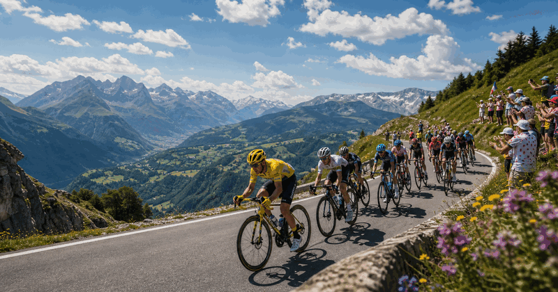
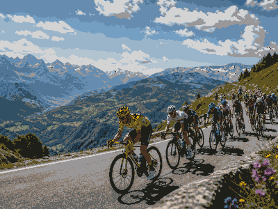

cycling event view
Tour de France
A compact visual event view of what the event is, how the current edition works and which parts matter most.
First held1903
FrequencyAnnual
Next edition2026
FormatStage race
History viewEdition results and parts
Use the year switcher for recent editions. The selected edition stays inside this framed sport view.

More cyclingInterested in more cycling?Explore related events, places and calendar moments.